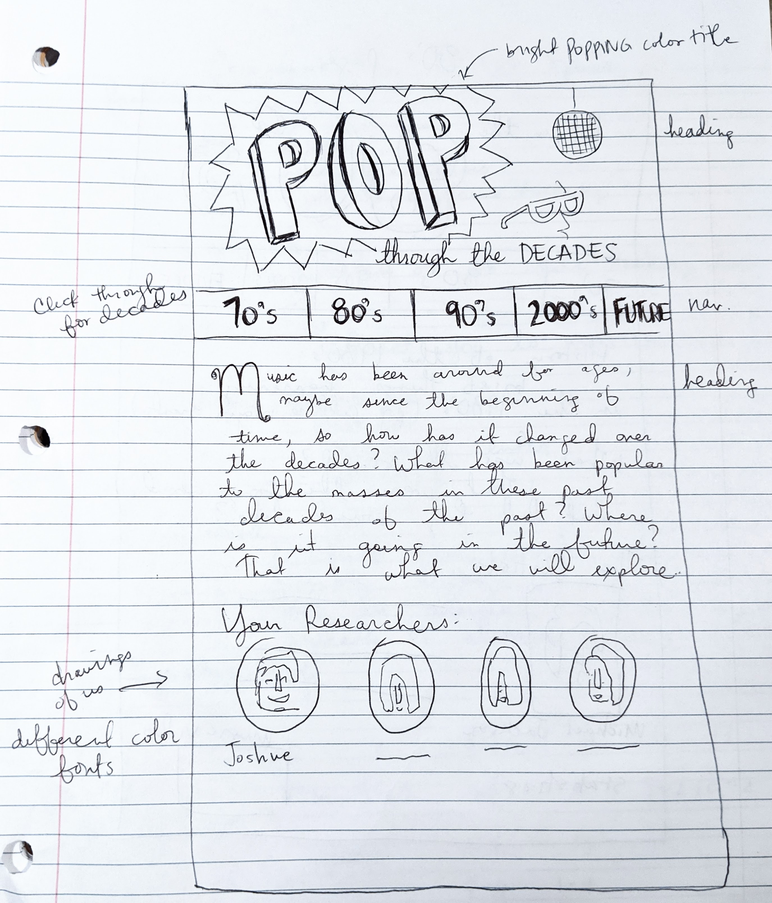
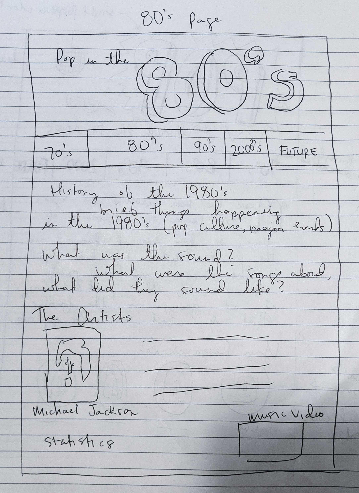
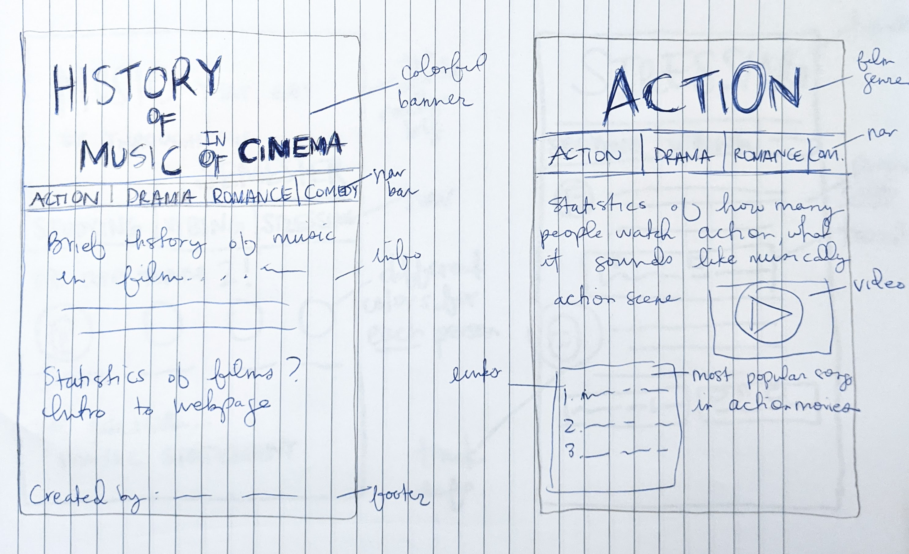
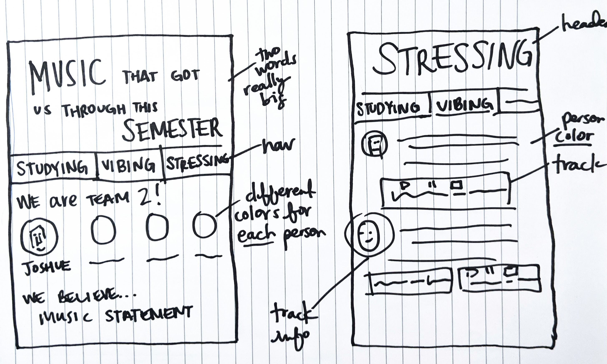

<!DOCTYPE html>
<html lang="en">
<head>
  <nav class="navbar navbar-expand-lg navbar-dark bg-primary">
      <button class="navbar-toggler" type="button" data-toggle="collapse" data-target="#navbarSupportedContent" aria-controls="navbarSupportedContent" aria-expanded="false" aria-label="toggle navigation">
        <span class="navbar-toggler-icon"></span>
      </button>

      <div class="collapse navbar-collapse" id="navbarSupportedContent">
        <ul class="navbar-nav mr-auto">
          <li class="nav-item active">
            <a class="nav-link" href="../index.html"><font style="vertical-align: inherit;"><font style="vertical-align: inherit;">HOME</font></font><span class="sr-only"><font style="vertical-align: inherit;"><font style="vertical-align: inherit;">(Current)</font></font></span></a>
          </li>
          <li class="nav-item">
            <a class="nav-link" href="css/index.css"><font style="vertical-align: inherit;"><font style="vertical-align: inherit;">CSS Code</font></font></a>
          </li>
      </div>
    </nav>
  <div class="container">
  <meta charset="utf-8">
      <!-- Required meta tags -->
      <meta charset="utf-8">
      <meta name="viewport" content="width=device-width, initial-scale=1, shrink-to-fit=no">
      <!-- Bootstrap CSS -->
      <link rel="stylesheet" href="https://stackpath.bootstrapcdn.com/bootstrap/4.3.1/css/bootstrap.min.css" integrity="sha384-ggOyR0iXCbMQv3Xipma34MD+dH/1fQ784/j6cY/iJTQUOhcWr7x9JvoRxT2MZw1T" crossorigin="anonymous">
      <link rel="stylesheet" type="text/css" href="css/index.css">
    </head>
    <body>
      <!-- Optional JavaScript -->
      <!-- jQuery first, then Popper.js, then Bootstrap JS -->
      <script src="https://code.jquery.com/jquery-3.3.1.slim.min.js" integrity="sha384-q8i/X+965DzO0rT7abK41JStQIAqVgRVzpbzo5smXKp4YfRvH+8abtTE1Pi6jizo" crossorigin="anonymous"></script>
      <script src="https://cdnjs.cloudflare.com/ajax/libs/popper.js/1.14.7/umd/popper.min.js" integrity="sha384-UO2eT0CpHqdSJQ6hJty5KVphtPhzWj9WO1clHTMGa3JDZwrnQq4sF86dIHNDz0W1" crossorigin="anonymous"></script>
      <script src="https://stackpath.bootstrapcdn.com/bootstrap/4.3.1/js/bootstrap.min.js" integrity="sha384-JjSmVgyd0p3pXB1rRibZUAYoIIy6OrQ6VrjIEaFf/nJGzIxFDsf4x0xIM+B07jRM" crossorigin="anonymous"></script>
    </body>
  </html>
</div>
    <div class="container">
      <div class="col-sm-12">
  <h1>Lab 20: Team Project Sketches</h1>
      
      
      
      
<div class="container">
    <div class="row">
      <div class="col-sm-9">
        <h2>Team Feedback</h2>
        <p>My team liked my sketches focusing on music websites. They liked the "united" feel of them all,
        that the websites seemed to follow a similar theme while still having their own unique information. One idea was the playlists, each team member sharing music that
        got them through the semester, being students during a pandemic and still finding some normalcy. Information like what the songs mean to us would be on each page
        during things like studying, driving, stressing out, or just vibing. <br>
        Another one is popular music through the decades, how it has changed, artists and songs of the era. We would collectively find information and statistics that informed the era.
        It would be less personal and more educational, requiring more research.<br>
        The last one is music in cinema, another one being educational. Statistics and stats of music in drama, romance, action, and comedy movies.
        It would be interesting to see, with clips and videos, what kind of music is used in these films.</p>
        <h2>Lab Purpose</h2>
        <p>This lab was about doing more detailed sketches on the top 3 ideas the team responded to the most. Looking at how the webpages look in more detail will help the team decide what we want to go with design wise.</p>
         <h2>Challenges</h2>
         <p>There were not too many challenges in this lab. It was cool to go into more detail of what the webpages would like.</p>
         <h2>Results</h2>
          <p>I really liked this process and trying to sketch things out. I'm excited to finalize how our team web page looks.</p></div>
</div>
</main>
